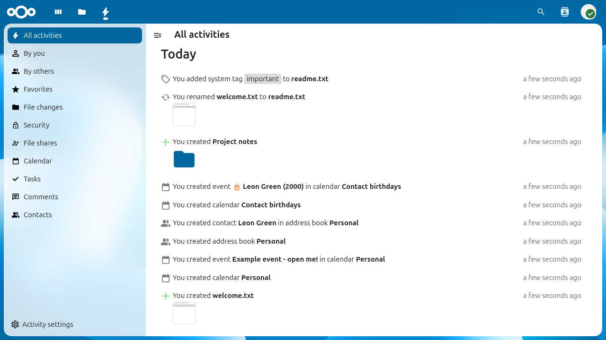
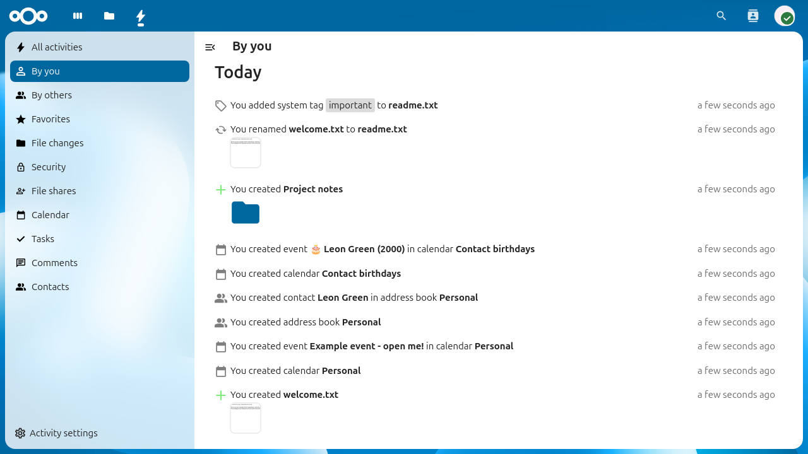
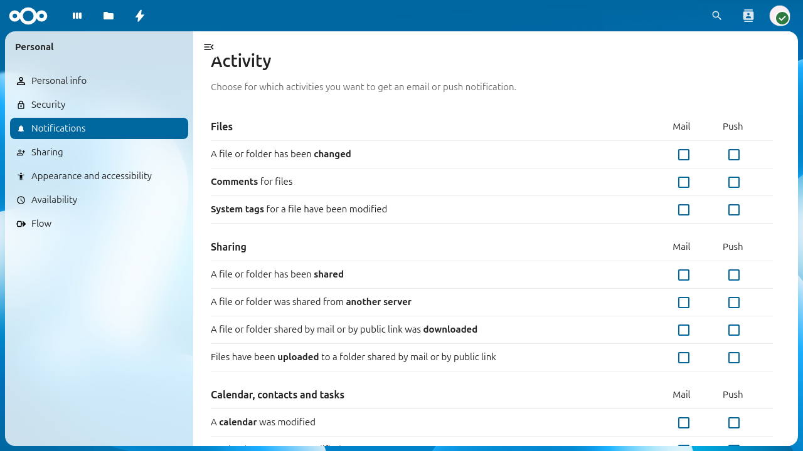

Using the Activity app
The Activity app keeps track of everything happening in your Nextcloud. It records events such as file changes, shares, calendar updates, and more, giving you a chronological overview of what happened and when.
The Activity app is enabled by default.

The Activity stream showing all recent activities.
Viewing your activity stream
To view your activity stream, click on the Activity icon in the
top navigation bar or navigate to /apps/activity in your browser.
The stream shows all events grouped by day. Each entry shows what happened, which file or object was affected, and how long ago the event occurred. Entries from other apps such as Calendar, Contacts, or Talk also appear in the stream if those apps are installed.
Filtering activities
The left sidebar provides filters to narrow down the activity stream:
All activities shows everything.
By you shows only activities that you triggered yourself.
By others shows only activities triggered by other users.
File changes shows only file and folder events (create, modify, delete, rename, move).
Additional filters may appear depending on which apps are installed on your Nextcloud instance (e.g. Favorites, Calendar, Contacts).

The activity stream filtered to show only your own activities.

The activity stream filtered to file changes only.
Activity in the Files sidebar
You can also view activities for a specific file or folder directly from the Files app. Select a file, open the sidebar and click on the Activity tab. This shows only the events related to that particular file, such as when it was created, modified, shared, or tagged.

The Activity tab in the Files sidebar showing per-file events.
RSS feed
The Activity app can provide your activity stream as an RSS feed, allowing you to follow your Nextcloud activity from any feed reader.
To enable the RSS feed:
Open the Activity app.
Click Activity settings at the bottom of the left sidebar.
Enable the Enable RSS feed toggle.
Copy the RSS feed link that appears.
Poznámka
The RSS feed link contains a secret token. Do not share it with others, as it provides unauthenticated access to your activity stream.
Notification settings
You can choose how you want to be notified about different types of activities. Go to Settings > Personal > Notifications to configure your preferences.

Personal notification settings for the Activity app.
The settings are organized by category (e.g. Files, Sharing, Calendar, contacts and tasks). For each activity type you can choose to receive:
Mail notifications (email)
Push notifications (mobile and desktop)
Check or uncheck the corresponding boxes to enable or disable notifications for each activity type.
Email notification frequency
Below the notification matrix you can choose how often email notifications are sent:
As soon as possible sends an email shortly after each event.
Hourly batches notifications and sends them once per hour.
Daily sends a single email per day.
Weekly sends a single email per week.
Daily activity summary
You can enable a daily summary email that is sent every morning with an overview of the previous day’s activities. This option is available as a separate toggle below the notification frequency setting:
Check Send daily activity summary in the morning to enable it.
The daily summary is independent of the per-event notifications above and provides a convenient digest of all activity.